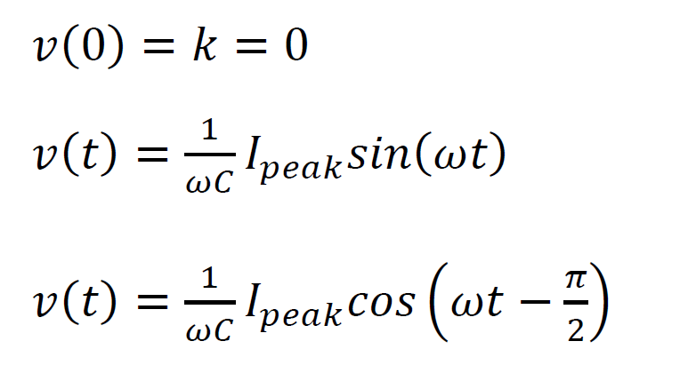
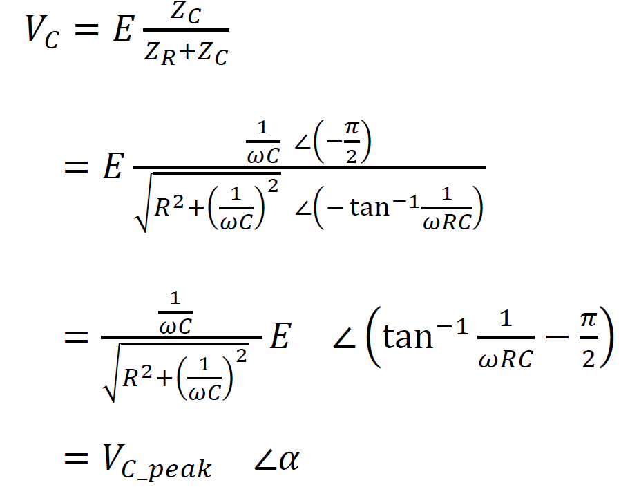

電容的原理公式
公式介紹（電容的歐姆定律）
公式證明Ｉ
公式證明ＩＩ
公式證明ＩＩＩ
弦波
心得
動態分析圖
上課教材

公式證明Ｉ

放電時的狀況公式

公式證明ＩＩ
階梯函數 暫態：有電流（dVc/dt有變化） 從0V→5V
穩態：無電流（維持5V狀態）
電容的電流 ＊直流電流 不允通過（只有充電時會有電流）
＊交流電 允許通過（非實際電子穿透，而是電荷的吸引導致）
電容電路電壓＆電流對時間函數

以上可推出電流以及電壓對時間的函數
接下來
將繼續探討電流與電壓之間的關係
由以上圖可知
電壓與電流間有相位差
電壓慢電流90度
也就如下方的圖
電容的電阻（電抗）
「電抗」：指的是阻止交流電流流是一種 電容和電感對電流抵抗的度量。
2pi*f = w(角頻率＊一圈為2pi＝角速率)
電容的阻抗
「阻抗」：指的是所有對電流抵抗的度量簡單的電路中，可以是為「電阻」另一個代名詞。
電容內的電壓函數（與自己的峰值做比較）
* *複數概念
E = I * R(E→EMF,電動勢)
E的相位差解釋補充
**乘除的複數觀念
*接下來使用分壓定律

證明完畢！

公式證明ＩＩＩ
能量的計算
多個Sin相加 且 頻率越大，振幅越小
心得
藉由數學式子表達電容，更能體會到電容的原理，以及更應證電容實驗帶來的結果！
然而因為學習證明的契機，我也瞭解了數學在科學界上是多麼的重要，如果數學不好
就很難進行科學的導論。
動態分析圖
點我觀看！
上課教材
How a Capacitor Works - Capacitor Physics and Applications (Youtube)
AC current impedance - Alternating Voltage for inductors, capacitors (Youtube)
謝謝您的支持！！
您的意見 是我改進的原動力
歡迎您將閱讀後的心得告訴我 讓我可以更加進步～～
 chen.oscar@hotmail.com
chen.oscar@hotmail.com
資訊科學系 一年甲班 陳泰元